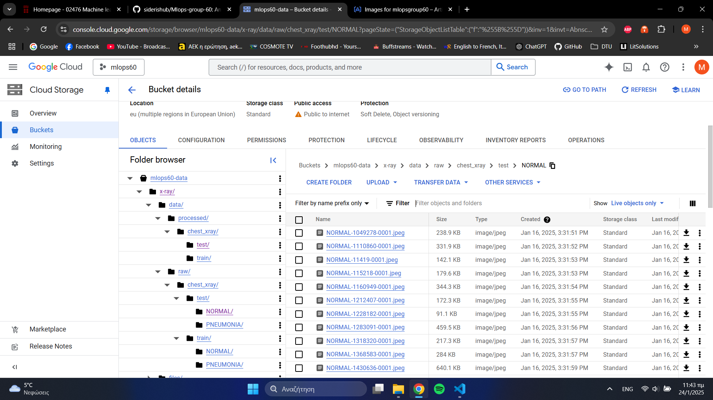
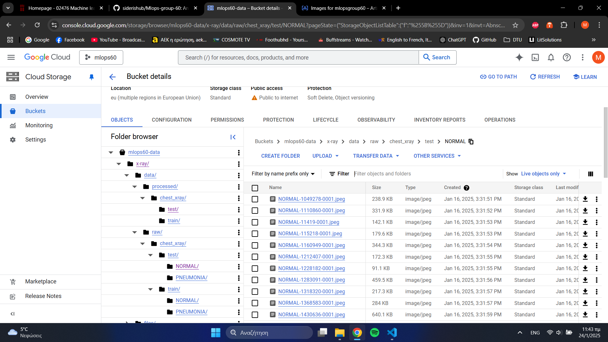
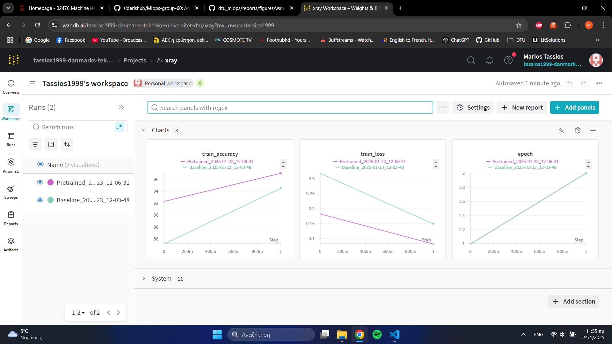
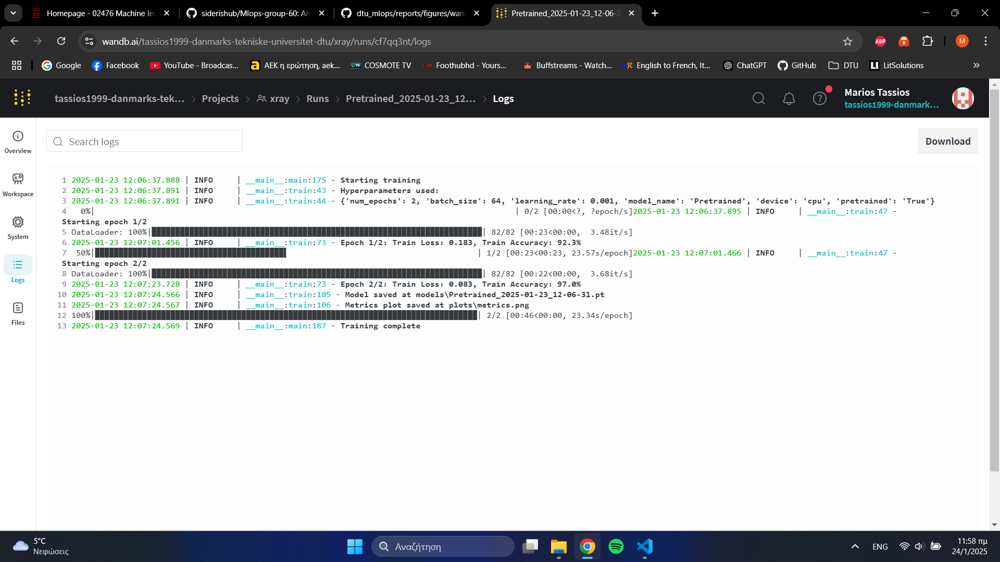
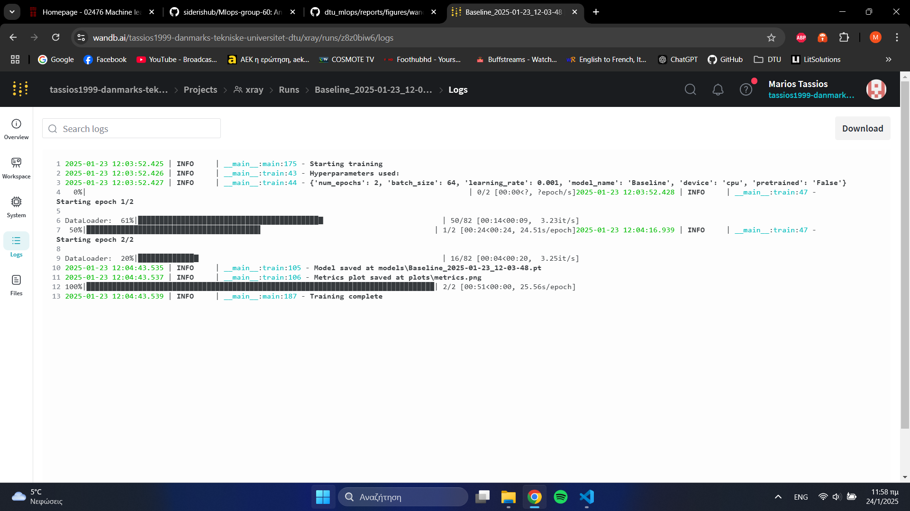
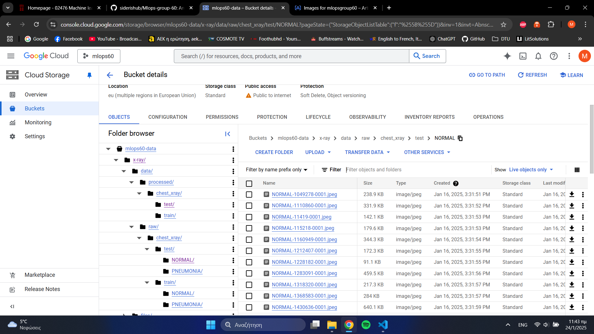
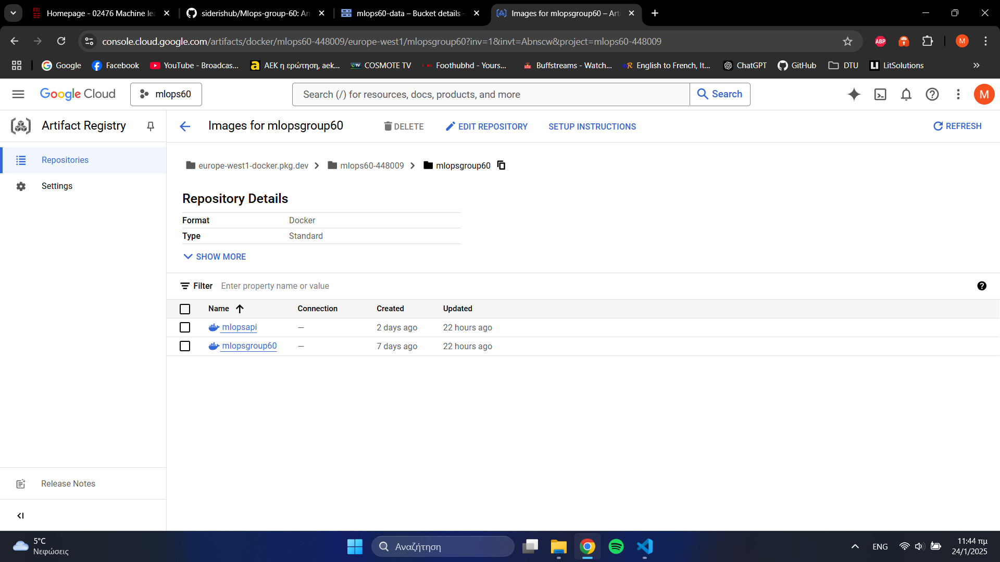
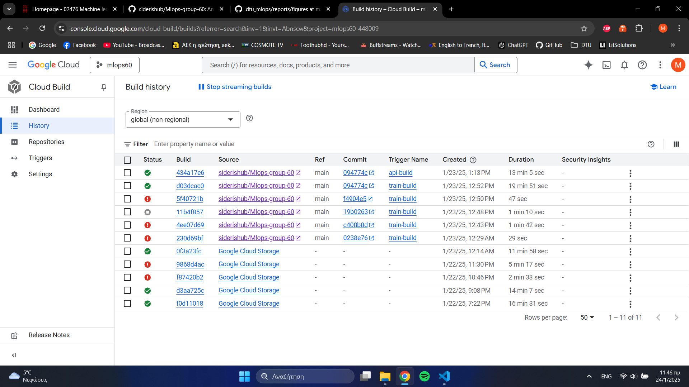

Operations
This is the report template for the exam. Please only remove the text formatted as with three dashes in front and behind like:
--- question 1 fill here ---
Where you instead should add your answers. Any other changes may have unwanted consequences when your report is
auto-generated at the end of the course. For questions where you are asked to include images, start by adding the image
to the figures subfolder (please only use .png, .jpg or .jpeg) and then add the following code in your answer:
markdown

In addition to this markdown file, we also provide the report.py script that provides two utility functions:
Running:
bash
python report.py html
Will generate a .html page of your report. After the deadline for answering this template, we will auto-scrape
everything in this reports folder and then use this utility to generate a .html page that will be your serve
as your final hand-in.
Running
bash
python report.py check
Will check your answers in this template against the constraints listed for each question e.g. is your answer too short, too long, or have you included an image when asked. For both functions to work you mustn't rename anything. The script has two dependencies that can be installed with
bash
pip install typer markdown
The checklist is exhaustive which means that it includes everything that you could do on the project included in the curriculum in this course. Therefore, we do not expect at all that you have checked all boxes at the end of the project. The parenthesis at the end indicates what module the bullet point is related to. Please be honest in your answers, we will check the repositories and the code to verify your answers.
data.py file such that it downloads whatever data you need and preprocesses it (if necessary) (M6)model.py and a training procedure to train.py and get that running (M6)requirements.txt and requirements_dev.txt file with whatever dependencies that you
are using (M2+M6)pep8) while doing the project (M7)Enter the group number you signed up on
Answer:
Group 60
Enter the study number for each member in the group
Example:
sXXXXXX, sXXXXXX, sXXXXXX
Answer:
s242804, s242850, s200513, s243216, s241878
A requirement to the project is that you include a third-party package not covered in the course. What framework did you choose to work with and did it help you complete the project?
Recommended answer length: 100-200 words.
Example: We used the third-party framework ... in our project. We used functionality ... and functionality ... from the package to do ... and ... in our project.
Answer:
We used the Pytorch Image Models (timm) deep-learning library for our project as it aligned with our objectives and requirements, as it has a high variety of available pre-trained models that we could choose from. From this we used the pretrained model "mobilenetv3_small_050.lamb_in1k" which is a image classification model trained on Image-Net1k. We compared this model to a simple baseline convolutional neural network that we built using pytorch. The advantage of using the timm library is the easy integration of the pretrained models and the ease of changing to a different model from the available library. Using the model, the X-Ray images from our dataset were analysed for signs of pneumonia infections and classified in the positive or negative class.
In the following section we are interested in learning more about you local development environment. This includes how you managed dependencies, the structure of your code and how you managed code quality.
Explain how you managed dependencies in your project? Explain the process a new team member would have to go through to get an exact copy of your environment.
Recommended answer length: 100-200 words
Example: We used ... for managing our dependencies. The list of dependencies was auto-generated using ... . To get a complete copy of our development environment, one would have to run the following commands
Answer:
We used conda (or miniconda) to manage our dependencies for python. A requirements.txt file can be found in the repository. These two commands are enough to get the libraries needed for the python environment : conda create --name mlops python=3.11 (firstly create an environment, we used python 3.11) pip install -r requirements.txt (and then install all the libraries listed in the requirements.txt). The requirements.txt has the libraries needed to create the data, train the model and evaluate it. There are some more files with requirements lists for some more stuff we did like the requirements_dev for stuff like linting with ruff, the requirements_test for stuff related to testing like pytest and the requirements_api for anything necessary to run the api. Also Dvc was used for data management so dvc pull can be used to get the data. The processed data are also saved in the dvc so running the data.py is not necessary.
We expect that you initialized your project using the cookiecutter template. Explain the overall structure of your code. What did you fill out? Did you deviate from the template in some way?
Recommended answer length: 100-200 words
Example: From the cookiecutter template we have filled out the ... , ... and ... folder. We have removed the ... folder because we did not use any ... in our project. We have added an ... folder that contains ... for running our experiments.
Answer:
To create an efficient structure for our ML project, we utilized the cookiecutter library, specifically the template provided by this course. Most parts of the template remained unchanged, however, we added some new folders to enhance the project's functionality. First, we included a logs folder, where all the log files from the training and evaluation processes are saved. Additionally, we introduced an experiments folder to store experiment-related files, such as coverage.txt, which provides details about the number of lines tested by our unit tests. Furthermore, a wandb folder was added to the structure, containing information about the runs logged on the Weights and Biases (wandb) framewore, and a plots one, in which the produced plots from the experiments are stored. Lastly, a frontent.py is added to the main script files, which includes the code for the frontent creation.
Did you implement any rules for code quality and format? What about typing and documentation? Additionally, explain with your own words why these concepts matters in larger projects.
Recommended answer length: 100-200 words.
Example: We used ... for linting and ... for formatting. We also used ... for typing and ... for documentation. These concepts are important in larger projects because ... . For example, typing ...
Answer:
We followed pep8 guidelines for code quality which were also enforced with ruff. Instead or writing alot of comments code was written in a way that was self explanatory. Also for linting a pre-commit was used which has stuff like removing whitespaces and such. Also we tried to follow coding practices as snake_case for functions and other "standard rules" which are used typically in python code so that it would be more easily readable to people familiar with python code. Practices like these are essential for code readability, understanding and for code maintenance to be easier. For projects like this one which I would say is supposed to mimic a research project it creates an easier way for people to meddle and do changes in the code. For bigger projects and companies maintenance and the ability to do quick code changes is essential, these practices help achieve that.
In the following section we are interested in how version control was used in your project during development to corporate and increase the quality of your code.
How many tests did you implement and what are they testing in your code?
Recommended answer length: 50-100 words.
Example: In total we have implemented X tests. Primarily we are testing ... and ... as these the most critical parts of our application but also ... .
Answer:
Four tests were implemented. Firstly our functions for importing the data was tested and the data itself was checked there, we believed what it would be redundand to check the preprocessing part because it is "checked" when we check the final data. Secondly the two models we have were tested, focusing on the inputs and the outputs of each models. Lastly testing about the api was written, firsly for the endpoinds themselves to check if they behave correctly and secondly a load test( the load test is not in the workflows pipeline).
What is the total code coverage (in percentage) of your code? If your code had a code coverage of 100% (or close to), would you still trust it to be error free? Explain you reasoning.
Recommended answer length: 100-200 words.
Example: The total code coverage of code is X%, which includes all our source code. We are far from 100% coverage of our ** code and even if we were then...*
Answer:
Our code coverage is equal to 66%. It might seem a bit small at first but this is the case for two reasons. Firstly on the data.py (which has the lowest coverage of 42%, all other files are above 90%) file only functions for importing the data was tested and the data itself was checked there, we believed that it would be redundand to check the preprocessing part because it is "checked" when we check the final data. and secondly there are some lines about importing and such which are ignored from our testing because we are checking mostly our functions. 100% code coverage doesn't bring certainty, there are always edge cases and other factors which are not always in mind and can bring doom to a project if we would only rely on unit tests. There is a reason people don't upload code in production on friday.
Did you workflow include using branches and pull requests? If yes, explain how. If not, explain how branches and pull request can help improve version control.
Recommended answer length: 100-200 words.
Example: We made use of both branches and PRs in our project. In our group, each member had an branch that they worked on in addition to the main branch. To merge code we ...
Answer:
We did include branches in some cases. For example we used branches when working on specific features that we were unsure about including at the time of workin on it, so we could avoid dealing with any merging issues, during our work on the feature. We did not use pull requests that frequently when merging our work to the main branch since a lot of the work was done while working in a group setting, which made it possible to review and talk about our changes in person. Additionally, we worked with pull requests since we implemented a dependabot that issued pull requests for use-cases like python library versioning.
Did you use DVC for managing data in your project? If yes, then how did it improve your project to have version control of your data. If no, explain a case where it would be beneficial to have version control of your data.
Recommended answer length: 100-200 words.
Example: We did make use of DVC in the following way: ... . In the end it helped us in ... for controlling ... part of our pipeline
Answer:
Dvc was used for data management so dvc pull can be used to get the data. The processed data are also saved in the dvc so running the data.py is not necessary. We sadly had issues while using the version_aware option on our storage, since support for it stopped a while ago by the dvc team we abandoned a version aware version of dvc. This was a sad outcome because we intended to use the versioning scheme to keep track of the dada used in each experiment. The way we implemented dvc was with gpc buckets where all the data before and after processing are saved in the dvc. Thankfully we gained two benefits from dvc, firstly that we don't have the data on our repo and everyone still can have access to them(if they have the right permissions) and secondly that the data was compressed with md5 which helps when downloading it.
Discuss you continuous integration setup. What kind of continuous integration are you running (unittesting, linting, etc.)? Do you test multiple operating systems, Python version etc. Do you make use of caching? Feel free to insert a link to one of your GitHub actions workflow.
Recommended answer length: 200-300 words.
Example: We have organized our continuous integration into 3 separate files: one for doing ..., one for running ... testing and one for running ... . In particular for our ..., we used ... .An example of a triggered workflow can be seen here:
Answer:
We are using continuous integration. Firstly for running our tests, the testing workflow was done in such a way that caching is utilized for the python packages. Specifically for unit testing multiple operating systems and python version were used although we didn't run it like that throuought the whole project time just because we were afraid of passing the 2000 minute limit of the github actions available time. Also we are pulling the data from our dvc because it is needed for some of the tests. To do that we had to also give the keys of a gcp service account to github via saving it as a secret variable to be used in the pipeline. After that a command is used to run the tests and show the coverage statistics. The second workflow "codecheck" is concerned with code formatting. It uses ruff to first check and then format our code. Lastly a workflow about pre-commit was added which runs our precommit functionality like linting. It should also be mentioned that dependabot helped with stuff like updating our python libraries when necessary. We also disables our workflows sometimes also for fear of passing the allowed github actions time. here is a link to one of our workflows https://github.com/siderishub/Mlops-group-60/actions/workflows/tests.yaml
In the following section we are interested in learning more about the experimental setup for running your code and especially the reproducibility of your experiments.
How did you configure experiments? Did you make use of config files? Explain with coding examples of how you would run a experiment.
Recommended answer length: 50-100 words.
Example: We used a simple argparser, that worked in the following way: Python my_script.py --lr 1e-3 --batch_size 25
Answer:
We used typer to manage the configuration of our hyperparameters for experiments. We only found out afterwards that integrating both Hydra and Typer does not make as much sense and since the work for Typer was already done and some of our code was not properly setup for Hydra (to work properly with pointers) we decided to stick with the already completed Typer workflow (after asking the TAs in Slack).
Example: python evaluate.py --model-name Pretrained --batch-size 64 --device-type cpu --pretrained True
Reproducibility of experiments are important. Related to the last question, how did you secure that no information is lost when running experiments and that your experiments are reproducible?
Recommended answer length: 100-200 words.
Example: We made use of config files. Whenever an experiment is run the following happens: ... . To reproduce an experiment one would have to do ...
Answer:
We ensured reproducibility of our experiments by using logs for training metrics and hyperparameters. By saving all logs and configurations, we can easily find them again. They also contain the date and time of the experiment. Also we save the model's date and time. We thought of saving the hash of the code commit used for the experiment but we didn't have time to implement that so we check the code based on the date and time of the commit. Although we initially planned to use DVC with the version aware option, it didn't work as intended. Because we relied on having version control for the data to save the hash of the commit we currently don't have a way to save the data of a current test.
Upload 1 to 3 screenshots that show the experiments that you have done in W&B (or another experiment tracking service of your choice). This may include loss graphs, logged images, hyperparameter sweeps etc. You can take inspiration from this figure. Explain what metrics you are tracking and why they are important.
Recommended answer length: 200-300 words + 1 to 3 screenshots.
Example: As seen in the first image when have tracked ... and ... which both inform us about ... in our experiments. As seen in the second image we are also tracking ... and ...
Answer:

We observed that both of our models achieved satisfactory performance with the initial hyperparameter combinations we used, so we did not conduct many additional experiments. The image above illustrates the metrics we tracked. Since our task involves binary image classification, we focused on monitoring the training loss to ensure it decreases with each epoch and the accuracy, which is crucial for this task. Additionally, we tracked the number of epochs used for each experiment to determine how many epochs were required to achieve optimal performance.
 
The two images above showcase the logs we saved in the Weights and Biases framework, which provide the aforementioned information about the training process. These logs also include the hyperparameters used for each experiment. To distinguish between models, it is essential to name them appropriately. We accomplished this by naming the models based on the date and time when the experiments were conducted. From the saved log images, it is evident that we record details such as the number of epochs, batch size, learning rate, the name assigned to the saved model, the device used, and whether a pretrained model is being utilized. One slight peculiarity is the necessity of using the same batch size as specified in the data.py file, which creates the processed images. This ensures there is no mismatch during training.
Docker is an important tool for creating containerized applications. Explain how you used docker in your experiments/project? Include how you would run your docker images and include a link to one of your docker files.
Recommended answer length: 100-200 words.
Example: For our project we developed several images: one for training, inference and deployment. For example to run the training docker image:
docker run trainer:latest lr=1e-3 batch_size=64. Link to docker file:Answer:
Docker was used to containerize what we believe were the most important parts of our application, training and the api. We mostly used Docker as an easier way to integrate our code with gcp. Usually it speeds up the process of uploading your infrastucture to have your code containerized so that you can use the images and do it right away. In general the containers can also be used to run the code without any conflicts of any local machine. Both the containers can be build and run locally or uploaded to the cloud with cloudbuild files. There are also triggers which upload the new images to the cloud. for the api a port variable is needed: "docker run mlopsapi:latest --port=8080". For the training although we could add training variables like lr because we have typer in our train.py script we didn't for simplicity. Link to docker files: https://github.com/siderishub/Mlops-group-60/tree/main/dockerfiles
When running into bugs while trying to run your experiments, how did you perform debugging? Additionally, did you try to profile your code or do you think it is already perfect?
Recommended answer length: 100-200 words.
Example: Debugging method was dependent on group member. Some just used ... and others used ... . We did a single profiling run of our main code at some point that showed ...
Answer:
When we ran into bugs we sometimes used Breakpoints in Visual Studio Code like in the lecture and step through the code top find the origin of the problems. We also made use of the console logs to quickly print out variable values and check them. Beyond that, we sometimes relied on ChatGPT for clarifications on error messages or hints on how to approach certain bugs, especially when we used unfamiliar libraries. Stack Overflow was also used to check out some error messages to gain some insights and resolutions.
In terms of profiling, we used SnakeViz to check whether there were any huge performance bottlenecks in the data loading or training steps. We didn’t go too deep into optimization because the code ran reasonably fast for our model, but we don’t consider it perfect. But since the model was fairly basic it seemed good enough after we made some improvements on the dataloading when we noticed issues in the profiling. Now the most intense process is the backpropagation which but it still seemed in a ordinary range.
In the following section we would like to know more about your experience when developing in the cloud.
List all the GCP services that you made use of in your project and shortly explain what each service does?
Recommended answer length: 50-200 words.
Example: We used the following two services: Engine and Bucket. Engine is used for... and Bucket is used for...
Answer:
GCP Bucket (Cloud Storage): For storing and retrieving images, model files, and other assets. It provides a secure, highly available, and scalable storage solution.
GCP SLO and Alerts: These help monitor our service’s performance and reliability against defined service level objectives. Alerts notify us if certain performance or error thresholds are exceeded.
GCP Cloud Run (Containers): Used to containerize and deploy our web service. It allows us to run containers in a fully managed environment and handle scaling.
GCP Vertex AI: Provides a unified platform for training and deploying machine learning models. We leveraged it for managing, tuning, and serving our ML models efficiently.
GCP Artifact Registry: Used to store container images and other build artifacts in a private, secure repository. This helps with version control and integration into CI/CD pipelines.
GCP Triggers: Integrated into our deployment pipeline to automate tasks whenever code is pushed or updated, ensuring continuous delivery and testing.
The backbone of GCP is the Compute engine. Explained how you made use of this service and what type of VMs you used?
Recommended answer length: 100-200 words.
Example: We used the compute engine to run our ... . We used instances with the following hardware: ... and we started the using a custom container: ...
Answer:
Initially, we attempted to train our uploaded Docker image by activating an n1-standard-4 VM type. However, we encountered difficulties in figuring out how to properly train our Docker image in this setup. To avoid the time-consuming process of opening an instance, cloning the repository, and installing the required dependencies, we decided to utilize the Vertex AI service. In summary, we created a vertexai_config.yaml file to train our image. We chose to use a CPU for this task, as the models we intended to train were not computationally intensive. Further details regarding the utilization of this service are explained in Question 22.
Insert 1-2 images of your GCP bucket, such that we can see what data you have stored in it. You can take inspiration from this figure.
Answer:

Upload 1-2 images of your GCP artifact registry, such that we can see the different docker images that you have stored. You can take inspiration from this figure.
Answer:

Upload 1-2 images of your GCP cloud build history, so we can see the history of the images that have been build in your project. You can take inspiration from this figure.
Answer:

Did you manage to train your model in the cloud using either the Engine or Vertex AI? If yes, explain how you did it. If not, describe why.
Recommended answer length: 100-200 words.
Example: We managed to train our model in the cloud using the Engine. We did this by ... . The reason we choose the Engine was because ...
Answer:
After pushing our Docker container to the Artifact Registry, we successfully trained our model using Vertex AI. To achieve this, we created a vertexai_config.yaml file, which is included in the configs folder. This file specifies the machine type required for training—n1-highmem-2 (CPU)—as we observed during earlier exercises that our model could be trained locally on a CPU. Hence, the job could be accomplished with fewer resources. In addition, we specified the number of replicas (set to 1) and provided the path to the Docker image stored in the cloud. To submit the job to Vertex AI, we used the following command:
gcloud ai custom-jobs create --region=europe-west1 --display-name=training --config=vertexai_config.yaml
We monitored the training process by streaming logs, which allowed us to track the performance and progress of the job. One observation was that the training process on Vertex AI was somewhat slow, as the initial setup of the service during the first run was time-consuming. The reason we chose Vertex AI instead of a VM is that we found this process to be more straightforward.
Did you manage to write an API for your model? If yes, explain how you did it and if you did anything special. If not, explain how you would do it.
Recommended answer length: 100-200 words.
Example: We did manage to write an API for our model. We used FastAPI to do this. We did this by ... . We also added ... to the API to make it more ...
Answer:
Yes we did manage to write the API. We used FastAPI as taught in in M22 "Request and APIs". The API includes a /predict/ endpoint for image classification. It processes an uploaded image from a user by reading it, applying test-time transformations and running inference using our pre trained model.To improve functionality, we added Prometheus metrics to monitor mistakes and requests. We also ensured that the model runs efficiently on GPU or CPU and implemented adequate error handling using HTTP exceptions. Furthermore, we added a /metrics endpoint to expose real-time monitoring data, making the API more robust and ready for production.
Did you manage to deploy your API, either in locally or cloud? If not, describe why. If yes, describe how and preferably how you invoke your deployed service?
Recommended answer length: 100-200 words.
Example: For deployment we wrapped our model into application using ... . We first tried locally serving the model, which worked. Afterwards we deployed it in the cloud, using ... . To invoke the service an user would call
curl -X POST -F "file=@file.json"<weburl>Answer:
We managed to deploy model as an application using FastAPI. Initially, we served the model locally to evaluate its functionality. We then used Docker to containerize the program defining dependencies and parameters in a Dockerfile. The container opens a port for GoogleCloud Run. The image contains both the trained model and the API code, with uvicorn serving the FastAPI app. The cloud deployment was done using GoogleCloud run.
Did you perform any unit testing and load testing of your API? If yes, explain how you did it and what results for the load testing did you get. If not, explain how you would do it.
Recommended answer length: 100-200 words.
Example: For unit testing we used ... and for load testing we used ... . The results of the load testing showed that ... before the service crashed.
Answer:
We performed both unit testing and load testing for our API. For unit testing, we used the pytest framework along with FastAPI's TestClient to validate endpoints. We wrote tests to ensure that each endpoint responded with the expected status codes and data formats. For example, our tests verify that the root endpoint returns a 200 status and a specific JSON payload, and that classifications are successful.
For load testing we used the Locust tool. We simulated various numbers of concurrent users starting from 10 and ramping up to 500 to observe how our API performed under increasing load. During these tests, we measured metrics like requests per second (RPS), average response time, and error rates. Our API handled up to around 300 concurrent users with average latencies under 200 ms before the response times began to increase noticeably.
Did you manage to implement monitoring of your deployed model? If yes, explain how it works. If not, explain how monitoring would help the longevity of your application.
Recommended answer length: 100-200 words.
Example: We did not manage to implement monitoring. We would like to have monitoring implemented such that over time we could measure ... and ... that would inform us about this ... behaviour of our application.
Answer:
We worked on implementing some monitoring on the deployed API using google cloud alerts and SLOs similair to what we did in the exercises. With this service we monitor the latency of the requests to the api and check the ratio of requests that go above our latency threshhold. This is to make sure that the responses of the API are quick so the users will quickly get their model predictinos. Furthermore we monitor the amount of requests to the API since we did not work out load testing, so if the amounts of requests increases above our thresshold we will have to check if everything is still working fine.
In the following section we would like you to think about the general structure of your project.
How many credits did you end up using during the project and what service was most expensive? In general what do you think about working in the cloud?
Recommended answer length: 100-200 words.
Example: Group member 1 used ..., Group member 2 used ..., in total ... credits was spend during development. The service costing the most was ... due to ... . Working in the cloud was ...
Answer:
We only used about $1 for our general project on the API since our used services were not that expensive. Obviously this will would still be subject to change over time. So our developement as a group was rather inexpensive and we still have some credits left for experimentation. Of course we somehow still learned the hard lesson , from one group member who opened a container with a GPU and forgot to shut it down, watching the credits pour away, so the prophecy from the lecture became true.
Did you implement anything extra in your project that is not covered by other questions? Maybe you implemented a frontend for your API, use extra version control features, a drift detection service, a kubernetes cluster etc. If yes, explain what you did and why.
Recommended answer length: 0-200 words.
Example: We implemented a frontend for our API. We did this because we wanted to show the user ... . The frontend was implemented using ...
Answer:
We created a frontend for our API, since we thought it would be a nice and easy way to make the API accessible. Setting up the frontend was done using Streamlit and was a very nice process, since it is very intuative to use and easy to understand. The frontend allows the user to upload an X-Ray chest image, like from the dataset, and quickly get a "diagnosis" by the pretrained model stating wether pneunomia was detected or not. We also used streamlit community cloud to make the frontend accessible using the following https://mlops-group-60-iapprrdd7xn3hmfg8lzazfv.streamlit.app.
Furthermore we created Documentation using MkDocs to gain some experience using it and have some basic documentation for our codebase. The documentation can be accessed using this https://siderishub.github.io/Mlops-group-60/.
Include a figure that describes the overall architecture of your system and what services that you make use of. You can take inspiration from this figure. Additionally, in your own words, explain the overall steps in figure.
Recommended answer length: 200-400 words
Example:
The starting point of the diagram is our local setup, where we integrated ... and ... and ... into our code. Whenever we commit code and push to GitHub, it auto triggers ... and ... . From there the diagram shows ...
Answer:
The architecture starts with a local development environment driven by Typer that makes it easy to run the commands and manage the data pipeline. Logs and experiment measurements are saved in Weights & Biases (W&B) to provide effective monitoring and reproducibility. The system uses dvc (data version control) pull to retrieve relevant data and models from a storage bucket (google cloud), keeping the local environment in sync with the remote data.
Once development or updates are complete locally, they are committed and published to GitHub, which serves as a version control and our collaborative coding platform/repo. Each commit initiates a series of automated workflows that handle important activities like testing, building and documentation generation.
Following successful workflow completion, the pipeline connects to a container registry to create and store Dockerized API images, ensuring consistent and scalable deployments. The containerized API is subsequently deployed to a cloud-based API service, making model predictions or data insights available.
To allow user engagement, a Streamlit front-end website with an easy-to-use interface is deployed. Users (like you, Nicki) can upload an x-ray image and utilize the pre-trained algorithm to classify a lung illness.
Discuss the overall struggles of the project. Where did you spend most time and what did you do to overcome these challenges?
Recommended answer length: 200-400 words.
Example: The biggest challenges in the project was using ... tool to do ... . The reason for this was ...
Answer:
The biggest challenge in our project was organizing all the various MLOps tools and services into a full working pipeline. Initially, we struggled with setting up everything since each team member had differing amounts of programming and software experience. Also the knowledge on machine and deep learning was uneven so we had to work on this in the beginning to make sure everyone knows where we want this project to go.
Another time-consuming aspect was learning how to properly use and integrate Google Cloud Platform (GCP) services—particularly Vertex AI and Cloud Run. Since most of us had limited experience with these services, we spent some time reviewing official GCP documentation, watching tutorials and experimenting with the services. Other times we struggled a bit since we tried to implement features too late, like working on hydra when we had already used typer for the hyperparameters. Similair we had some challenges when trying to implement lightning after we already had all our training, model and evluation files working so we decided not to refracture everything.
We also ran into challenges with continuous integration (CI) and test coverage. Our codebase grew quickly, and ensuring that the important parts of new functionality was covered by tests took some work, but with the help of the exercise practice it worked well.
Overall, our biggest takeaway was the importance of proper planning and thinking ahead. By working on each part of the project in smaller steps and working together as a team we were able to integrate the pieces into a full MLOps pipeline successfully.
State the individual contributions of each team member. This is required information from DTU, because we need to make sure all members contributed actively to the project. Additionally, state if/how you have used generative AI tools in your project.
Recommended answer length: 50-300 words.
Example: Student sXXXXXX was in charge of developing of setting up the initial cookie cutter project and developing of the docker containers for training our applications. Student sXXXXXX was in charge of training our models in the cloud and deploying them afterwards. All members contributed to code by... We have used ChatGPT to help debug our code. Additionally, we used GitHub Copilot to help write some of our code. Answer:
Student s241878 was in charge of working partially on the basemodel, the api frontend, the documentation, the metrics, writing parts the report working partially on the api and helping with some collaboration.
Student s242850 was in charge of creating the basemodel, adding logging, and synchronizing it to weights and biases. Additionally, he contributed by training the model on cloud by using VMs and Vertex AI.
Student s243216 and s200513, did the CLI arguments using Typer and writing the FastAPI app and the testing of it. Furthermore, we managed to create our dockerfile and uploaded it to google cloud with help and in collaboration with student s242804.
Student s242804 created the tests, the workflows and the triggers. He also focused on some other cloud activities.
Although some people might have played a bigger part in some parts, work was mostly done in a group setting so people got exposed to all of the contents of the project.
We used ChatGPT to help us debug our code in cases where we were unfamiliar with error codes or using new packages like Streamlit where just a small comment was missing. We partially used GitHub Copilot to write the code but it often was not to useful since it seemed to be unaware of the project structure.

{kind=link}
{kind=link}
{kind=link}
{kind=link}
{kind=link}